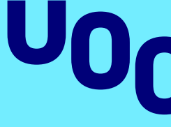

Work Experience
Technology Specialist Engineer / Ultimate Solutions
06/2019 - 06/2021 Barcelona, Spain
- Technology Specialist Engineer, worked in Serialization and Labelling dept. at client Grifols.
- Implemented configurations for Systech and Zetes in the different Grifols packaging lines (Spain and Ireland).
- Coordinated different departments (Testing, Infrastructures, Validations, Engineering, etc.) to achieve the project goals.
- Activities based on Systech and Zetes, SAP ECC, SAP ATTP.
- Developed client needs based on Systech’s Guardian regarding SAP Advanced Track and Trace Pharmaceuticals (Level 4).
- Managed a team of 3 people as a supervisor of the Ultimate Solutions team on Grifols.
- Activities based on softwares Systech and Zetes, SAP ECC, SAP ATTP.
Intern Supply Base Development / Kautex Textron
07/2018 - 02/2019 Barcelona, Spain
- Managed and track supplier performance to ensure the delivery of high-quality parts.
- Managed quality complaints in business CAQ and share supplier issues that could affect other plants & programs. (Quality claims management, 8D reports, and communication with customer).
- Understanding of FMEA, Control Plan, Flow Chart, BOM related to high quality parts. PPAP and knowledge related such as PSW, PDS, to ensure an efficient follow-up.
- Support and track supplier 8D´s through the completion.
Education

- Master’s degree in Informatics Engineering
- Open University of Catalonia
- 2021 - 2024
- Bachelor’s degree in Electrical Engineering4
- Polytechnic University of Catalonia4
- 2014 - 20194
Technical Skills
- Technologies: Java, CSS, HTML, Python, JavaScript
- Framework/Libraries: Numpy, Pandas, Scikit, Keras
- Tools: VSCode, Inttellij, Eclipse
- Database: Learning SQL
Certifications
- Certificate in Advanced English
- The Odin Project (HTML, CSS, JavaScript, Node, etc.)
- Building Asset Hierarchies with PI AF
- PI System Basics
Languages
- Spanish - Native
- Catalan - Native
- English - C1
- Chinese - HSK4
- Japanese - N5
Soft Skills
- Time Management
- Adaptability
- Leadership
- Problem Solving